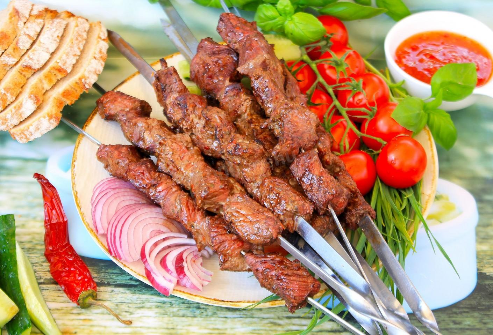

Pork Kebab Recipe

Description
Pork kebab, marinated with onion and mayonnaise.
For those who do not like to spoil meat with vinegar, because it dries, I suggest a compromise - do not add vinegar to the marinade, but sprinkle the shish kebab with wine vinegar.
Ingredients
- Pork (neck) - 1.5 kg
- For marinade:
- Onion - 700 g
- Mayonnaise - 75 g
- Vinegar (wine) - a little
- Lemon juice - to taste
- Salt - to taste
- Pepper - to taste
Steps
- Cut the pork neck into identical pieces, not small.
- Cut the onion into thin rings and mash it with your hands (or chop the onion using kitchen appliances).
- Mix the meat well with the onion and the rest of the marinade ingredients.
- Leave the pork in the marinade for a few hours in the refrigerator.
- Then string the pieces of marinated meat on skewers and fry the pork kebab.